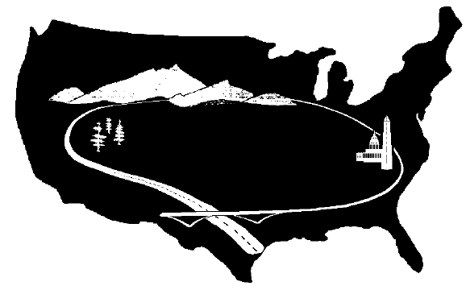

By Ibrahim Izah
This webmap was developed to help its staff as well as partners work across agencies and understand the relevant regional context and contacts for collaborative, multi-agency work. . Pan the map to see more U.S. states and territories.
|

U.S. Forest Service |

U.S. Fish and Wildlife Service |
 Office of Federal Lands Highway |

National Park Service |

US Army Corps of Engineers |

Bureau of Land Management |